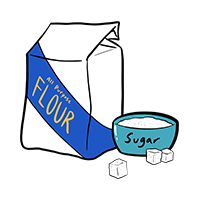
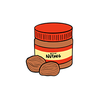

Description
This is a recipe for an apple pie, which is a seemingly generic but household classic, especially around the holiday season. It consists of a pie crust filled with cinnamon-covered sliced apples. Needless to say, it is a one way ticket to Flavor Town. Hot or cold, with or without extra toppings or desserts, the apple pie does not disappoint.
Prep Time: 30 minutes
Total Completion Time: 3 hours
Serves 8 people (8 evenly cut slices)
Supplies
Ingredients
- 1 box (14.1 oz) refrigerated Pillsbury™ Pie Crusts (2 Count), softened as directed on box
- 6 cups thinly sliced, peeled apples (6 medium)
- 2 tablespoons all-purpose flour, 3/4 cup sugar
- 3/4 teaspoon ground cinnamon
- 1/4 teaspoon salt
- 1/8 teaspoon ground nutmeg
- 1 tablespoon lemon juice
Crust Ingredients
Enriched Flour Bleached (wheat flour, niacin, ferrous sulfate, thiamin mononitrate, riboflavin, folic acid), Lard and Hydrogenated Lard with BHA and BHT Added to Protect Flavor, Wheat Starch, Water. Contains 2% or less of: Salt, Rice Flour, Xanthan Gum, Sodium Propionate and Potassium Sorbate (preservatives), Citric Acid, Annatto Extract (for color).
Instructions
Crust Perparation
- Bring crust to room temperature.
- If crusts are REFRIGERATED, let pouch(es) stand at room temperature 15 minutes OR microwave on Defrost 10 to 20 seconds.
- If crusts are FROZEN, let pouch(es) stand at room temperature 60 to 90 minutes before unrolling. Do not microwave frozen crusts.
- Slowly and gently unroll crust.
- Place crust in ungreased 9-inch pie plate (glass recommended). Press crust firmly against side and bottom.
- Trim bottom crust along pan edge; fill.
- Place second crust over filling.
- Wrap excess top crust under bottom crust edge. Press edges together to seal; flute. Cut slits in top crust.
- Bake as directed in recipe.
Pie Baking
 Heat oven to 425°F. Place 1 pie crust in an ungreased 9-inch glass pie plate. Press firmly against side and bottom.
Heat oven to 425°F. Place 1 pie crust in an ungreased 9-inch glass pie plate. Press firmly against side and bottom.- In a large bowl, gently mix filling ingredients.
 Spoon into crust-lined pie plate.
Spoon into crust-lined pie plate. Top with second crust.
Top with second crust.- Wrap excess top crust under bottom crust edge, pressing edges together to seal; flute.
- Cut slits or shapes in several places in the top crust.
- Bake for 40 to 45 minutes or until the apples are tender and the crust is golden brown.
- Cover the edge of the crust with 2- to 3-inch wide strips of foil after the first 15 to 20 minutes of baking to prevent excessive browning.
- Cool on the cooling rack at least 2 hours before serving.